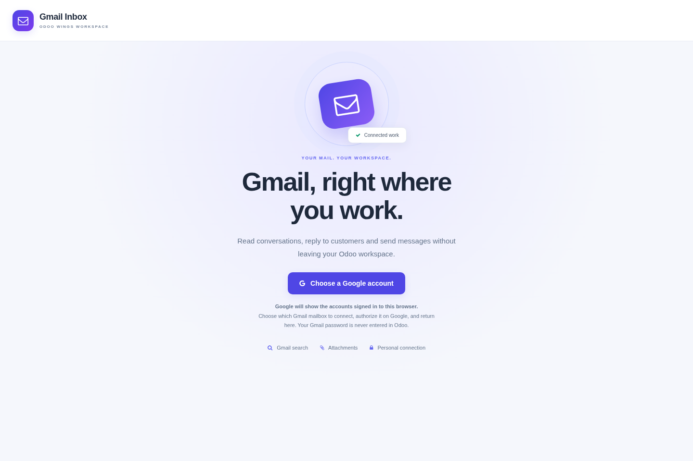
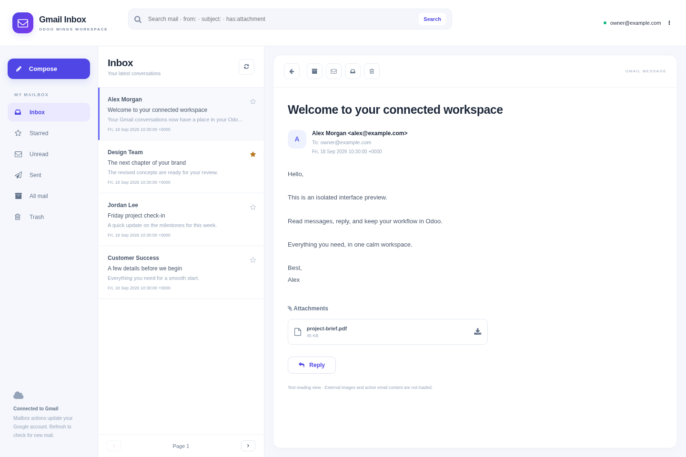
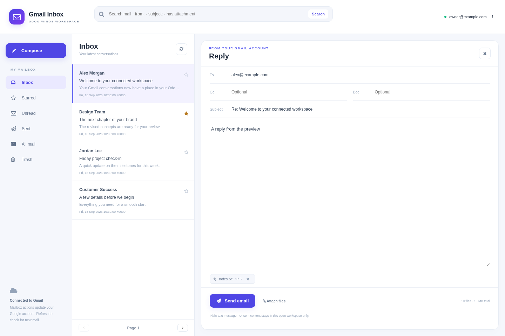

ODOO WINGS / ODOO 19
Connect your Google mailbox and read, search, reply and compose from a dedicated workspace inside Odoo.
The captures below show the actual Owl interface in an isolated preview with fictional mailbox data. They are not screenshots of a live Gmail connection.

01 / YOUR MAILBOX
Navigate Inbox, Starred, Unread, Sent, All mail and Trash. Search with Gmail expressions such as from:, subject: and has:attachment. Read individual messages in a clean text view, download attachments and reply from the same workspace.

02 / COMPOSE & REPLY
Write plain-text messages with To, Cc and Bcc. Add up to ten files totaling 10 MB. Replies include Gmail thread information and standard reply headers. If a send fails, your compose content stays open so you can resolve the issue.

| Organize | Star messages, mark read/unread, archive or move back to Inbox. |
| Trash & restore | Move messages to Trash with confirmation and restore them later. No permanent-delete action. |
| Search & browse | Gmail search operators, manual refresh and fifteen-message pages. |
| Personal access | One independent Gmail connection per internal Odoo user, with server-side OAuth tokens. |
| Disconnect | Remove the local connection or explicitly revoke Google's authorization. |
Messages are displayed as text. Remote images, tracking pixels and active email HTML are not loaded. Mail content is requested on demand and is not copied into Odoo business records by this addon. Each mailbox call uses the current user's own connection.
OAuth tokens are encrypted in a private server-side model. Server administrators control the database and its encryption secret. See the included README for storage, retention and access details.
COMPLETE TEST CONFIGURATION
Use a separate Gmail account containing only harmless test messages. Inbox actions in Odoo update the real connected mailbox, including read status, stars, archive, Trash and sent mail.
| Test mailbox | A separate Gmail or Google Workspace address added as an OAuth test user. |
| Odoo address | A public HTTPS URL, or http://localhost:8069 for local development. |
| Google project | A Google Cloud project where you can configure APIs and OAuth credentials. |
| Odoo access | Administrator access for configuration and an internal user for the mailbox connection. |
https://www.googleapis.com/auth/gmail.modifyThis scope permits reading, composing, sending and changing mailbox labels. The addon does not request permanent-delete access. Google classifies Gmail mailbox scopes as restricted; public production use can require Google verification and possibly a security assessment.
http://localhost:8069http://localhost:8069/ow_gmail/oauth/callback
https://erp.example.com/ow_gmail/oauth/callback
The URI must match exactly. Scheme, hostname, port and path are significant. Do not add a trailing slash unless Odoo displays one.
The chooser belongs to Google and opens on accounts.google.com. Odoo cannot inspect or display the browser's signed-in Google accounts itself. During testing, Google may also display an unverified-app notice. Continue only when this is your own Google Cloud project and the displayed app and scope are correct. Never enter the Gmail password into Odoo; authentication happens on Google's domain.
| Connect and reconnect | Authorize the test account, reload Odoo and confirm the mailbox remains connected. |
| Read and search | Open a test message, confirm its read status changes, and try from:, subject: and has:attachment. |
| Mailbox actions | Star, mark unread, archive, move to Inbox, move to Trash and restore a harmless test message. |
| Send and reply | Send only to another test address. Test To, Cc, Bcc, reply threading and a small attachment. |
| User separation | Connect a second Odoo user to a different test mailbox and confirm each user sees only their own connection. |
| Disconnect | Test local disconnect and Google access revocation separately. |
| redirect_uri_mismatch | Copy the exact callback from Odoo. Check HTTP/HTTPS, hostname, port, reverse proxy and trailing slash. |
| Access blocked | Add the Gmail address under OAuth Test users and confirm the consent audience is correct. |
| Gmail permission denied | Enable Gmail API and add the gmail.modify scope, then reconnect and approve it. |
| Missing offline token | Remove the test app from Google Account third-party connections and connect again. |
| Authorization expired | Testing-mode authorization or user revocation can require reconnection. Use Reconnect Google from the account menu. |
Testing is not production approval. Before public use, publish an accurate privacy policy, secure your server and backups, review Google API user-data requirements and complete any Google verification that applies to your OAuth project.
Odoo 19 with custom-addon support. Dependencies: Web and Base Setup; Python requests and cryptography. Native Owl frontend. This is a Gmail API application, not an embedded gmail.com page or an Odoo sign-in provider.
This release supports individual messages and plain-text composition. It does not include Gmail draft editing, HTML composition, alias sending, background synchronization, complete conversation grouping or automatic CRM/chatter linking. Unsent content stays in the open workspace only. Gmail quotas, sending limits and Workspace policies apply.
Independent integration by Odoo Wings. Not endorsed by Google. Gmail and Google are trademarks of Google LLC.
Explore practical apps designed to simplify daily work, improve team productivity and create a smoother Odoo experience for businesses of every size.
Find the right tools for your team on the official Odoo Apps Store.
Odoo Wings provides installation and configuration support.
Contact Odoo Wings